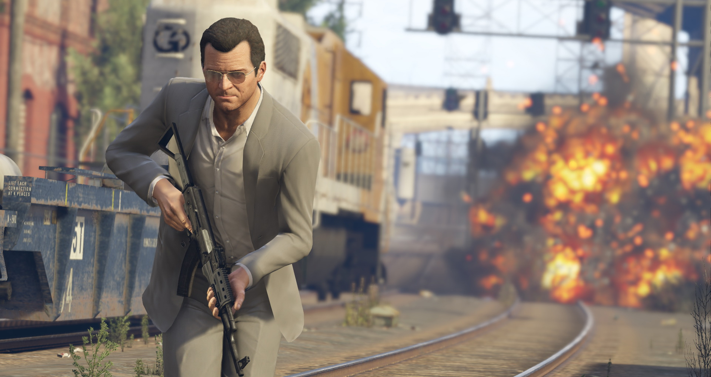
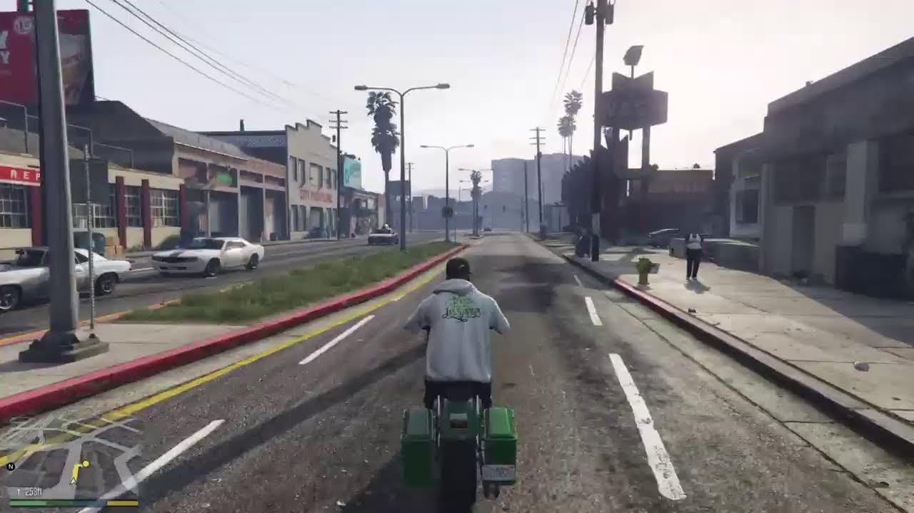
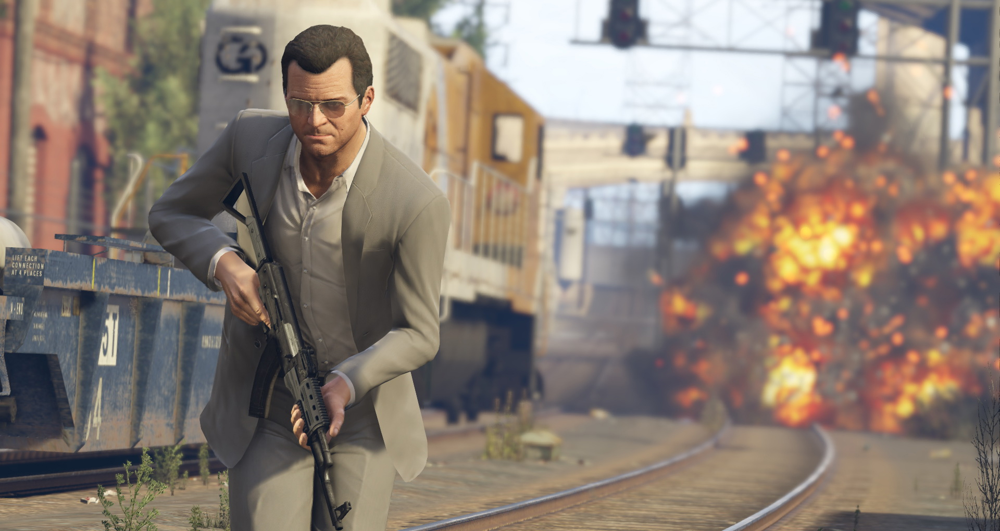
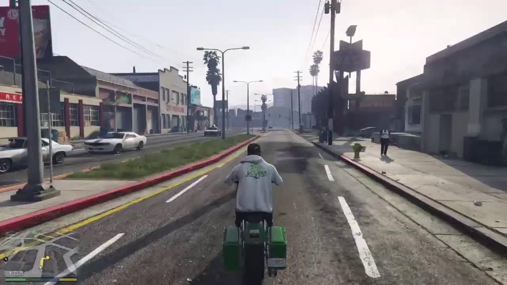
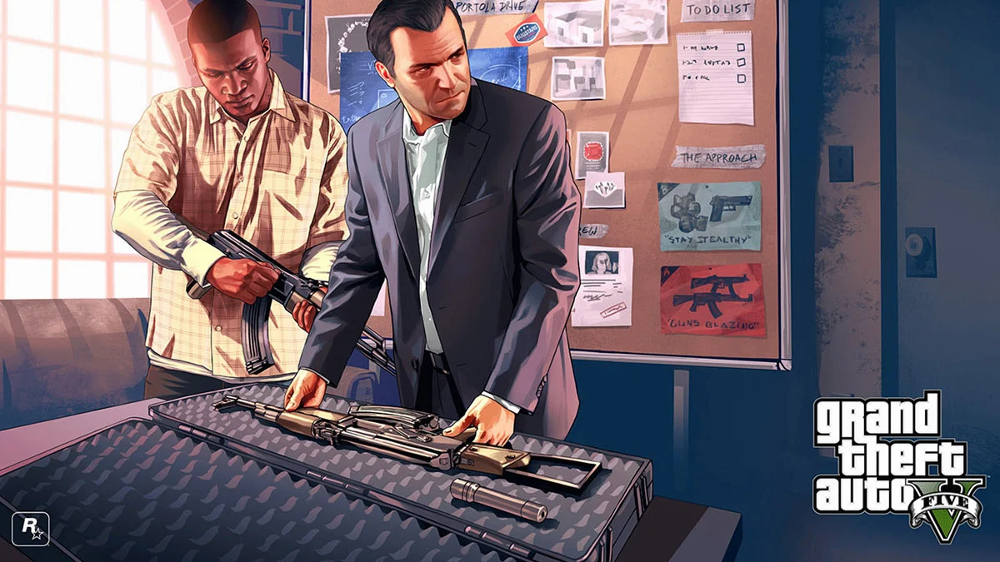
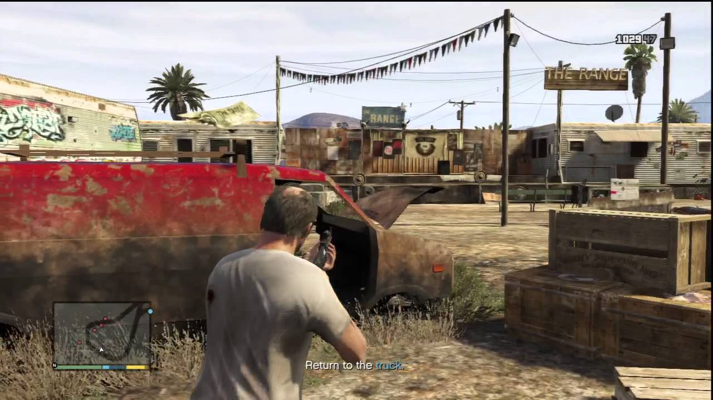
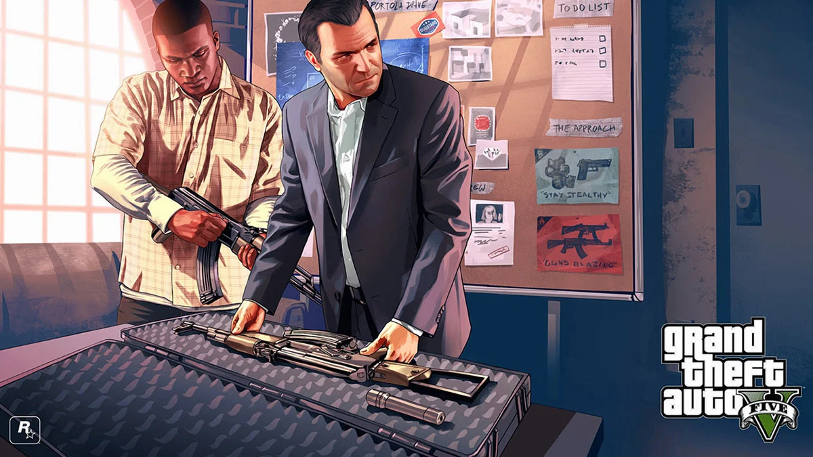
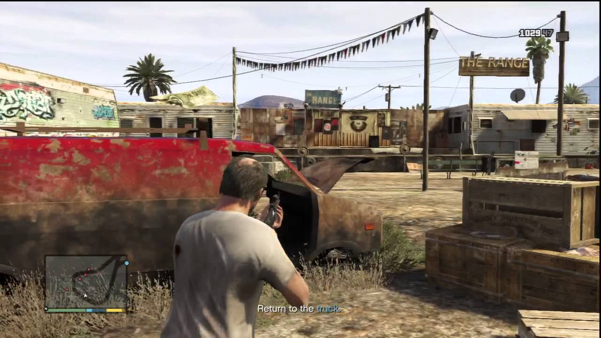

Grand Theft Auto V
Información del juego
Grand Theft Auto V (abreviado como GTA V o GTA 5) es un videojuego de acción-aventura de mundo abierto desarrollado por el estudio escocés
Rockstar North y distribuido por Rockstar Games. Este título revolucionario hizo su debut el 17 de septiembre de 2013 en las consolas
Xbox 360 y PlayStation 3. Posteriormente, experimentó una reaparición el 18 de noviembre de 2014 en las consolas de nueva generación,
Xbox One y PlayStation 4, con una perspectiva en primera persona. El juego luego amplió su alcance a Microsoft Windows el 14 de abril
de 2015. El capítulo más reciente en su historia confirmó su llegada a Xbox Series X/S y PlayStation 5 en marzo de 2022, alardeando de
impresionantes mejoras gráficas, incluido el soporte para una resolución de 4K y fluidos 60 FPS.
Es importante destacar que GTA V ostenta la distinción de ser uno de los videojuegos más costosos jamás desarrollados, con un presupuesto de 265 millones de dólares,
superando a su predecesor, GTA IV, que contó con un presupuesto de 100 millones de dólares. Grand Theft Auto V recaudó 800 millones de dólares en las primeras 24 horas de su lanzamiento,
convirtiéndose en el videojuego de venta más rápida en la historia. En tan solo tres días, rompió récords al alcanzar la cifra de 1000 millones de dólares en ventas.
Nueve años después de un robo fallido en la ciudad ficticia de Ludendorff, North Yankton, el ex ladrón de bancos Michael Townley y su familia se mudaron a Los Santos con una nueva
identidad. Michael lleva una vida normal pero aburrida, hasta que se encuentra con Franklin Clinton, un gángster que busca ascender en el inframundo de Los Santos, e inesperadamente se
encuentra con Trevor Philips, el único otro sobreviviente del robo a un banco en Ludendorff. Los tres unen sus fuerzas para llevar a cabo una audaz tarea de robar el Union Depository
y apoderarse de decenas de millones de dólares en oro. Sin embargo, los federales corruptos se aprovechan del trío, usándolos para llevar a cabo su propia agenda, así como numerosos enfrentamientos con bandas rivales y otros delincuentes.
El juego se desarrolla en Los Santos, una ciudad ficticia basada en Los Angeles, formado por alrededores como:
* Cordones montañosos
* Desiertos
* Zonas de cultivo
* Zonas de bosque
* Océano
Dicho ciudad abarca varios sectores, tales como las zonas comerciales, las playas, los barrios adinerados y los barrios marginados
Reseñas
IGN
Obra maestra
"Absolutamente divertido, impresionante en alcance y mordazmente divertido, GTA V es un juego histórico."
"Grand Theft Auto V no es sólo un videojuego ridículamente divertido, sino también una sátira inteligente y mordaz de la América contemporánea. Representa un refinamiento de todo lo que GTA IV puso sobre la mesa hace cinco años. Técnicamente es más logrado en todos los
sentidos imaginables, pero también es tremendamente ambicioso por derecho propio. Ningún otro mundo en los videojuegos se acerca a esto en tamaño o alcance, y hay una aguda inteligencia detrás de su sentido del humor y su don para el caos. Cuenta una
historia convincente, impredecible y provocativa sin dejar que se interponga en el camino de tus propias aventuras autodirigidas por San Andreas. Es uno de los mejores videojuegos jamás creados."
"10 / 10"
Metacritic
Aclamado universalmente
"Basado en 66 reviews de críticas."
"Una actualización increíblemente ambiciosa que no sólo mejora las imágenes y la jugabilidad
sino que, a través de la nueva vista en primera persona, ofrece una nueva forma de jugar el mejor GTA de todos los tiempos."
"97 / 100"
LevelUp
Épico 10 de 10
"Una de las mejores historias en años recientes, ofrece 2 formas de jugar: en línea y en solitario, excelente nivel de optimización que utiliza todos los recursos de tu computadora, compatibilidad con gran cantidad de equipos y especificaciones técnicas, opciones gráficas superiores para aprovechar equipos de cómputo avanzados, apartado en línea divertido, con todas las actualizaciones de las consolas Excelente calidad gráfica llena de detalles, todo está disponible desde el primer momento de su lanzamiento""
Imágenes y capturas del juego
 



 


